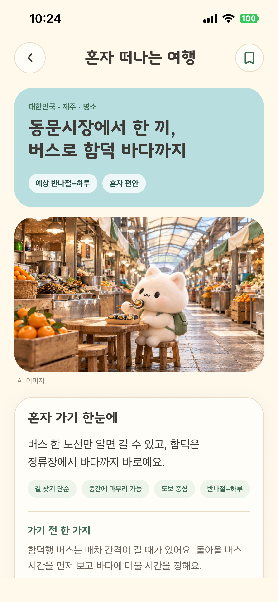
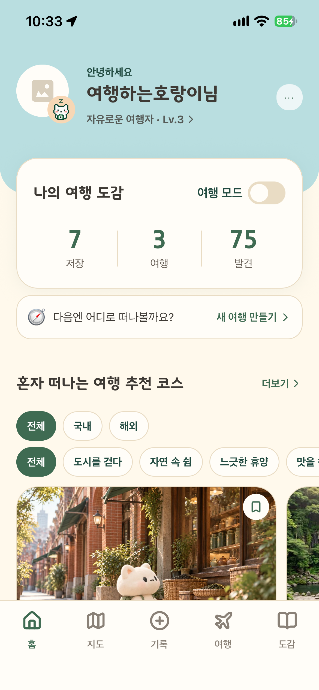
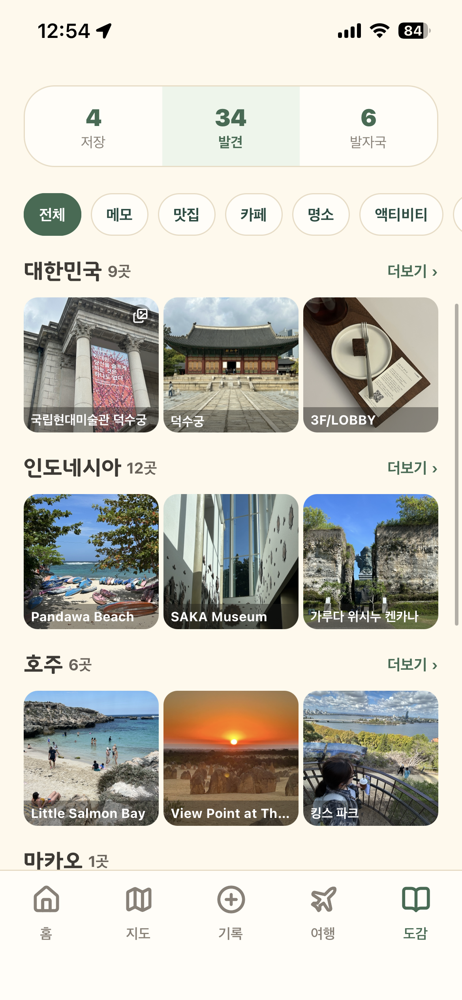
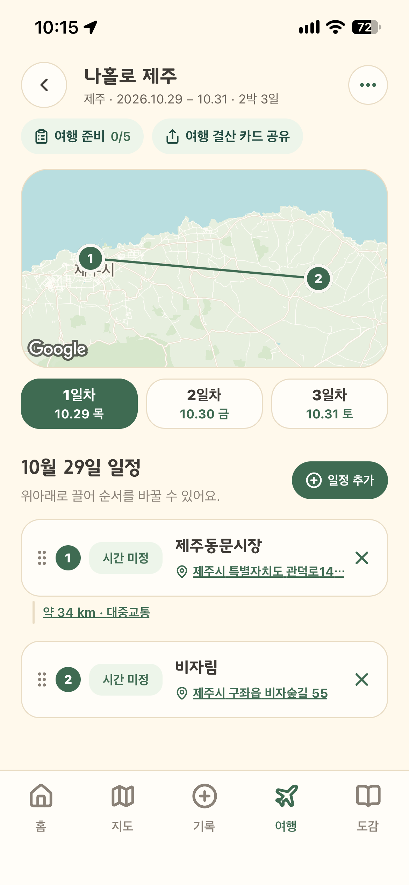

01 발견
혼자 가기 좋은 곳을 찾아요
나의 여행 스타일에 맞는 장소와 추천 코스를 살펴봐요. 지도에서 마음에 든 곳은 나만의 폴더에 저장해요.



여행 준비
혼자 가기 좋은 장소를 찾아 저장하고,
가고 싶은 곳을 이어 여행을 계획해요.
01 발견
나의 여행 스타일에 맞는 장소와 추천 코스를 살펴봐요. 지도에서 마음에 든 곳은 나만의 폴더에 저장해요.

02 계획
저장한 장소를 이어 나만의 여정을 만들어요. 날짜별로 갈 곳을 정하고, 장소 사이의 이동 구간도 확인해요.

03 기록
방문한 장소에 사진과 후기를 남겨요.
다시 가고 싶은 곳도, 그날의 작은 발견도 기억할 수 있게요.
나만 보고 싶은 순간은 개인 기록으로,
나누고 싶은 발견은 공개로 남겨요.
같은 계정으로 로그인하면 다른 기기에서도 기록을 이어갈 수 있어요.
기록이 모인 여행도감 보기04 도감
여행하며 남긴 사진과 후기가 여행도감에 쌓여요.
어느 나라에서 무엇을 만났는지 한눈에 돌아봐요.
새로운 지역과 다양한 경험을 만날수록
나의 여행자 이야기도 함께 성장해요.
혼자 떠나는 모든 순간을 위한 가이드
App Store에서 다운로드